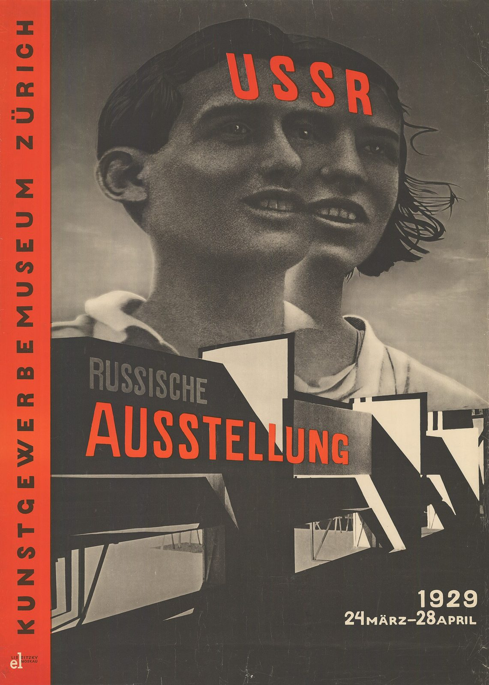

References / Poster / 367
USSR Russische Ausstellung poster, Zurich
El Lissitzky’s poster for a Soviet exhibition in Zurich fuses two young faces into one photomontage and runs the museum’s name up a red bar.
- Source
- Plakatsammlung der Schule für Gestaltung Basel, object 6370
- Creator
- El Lissitzky
- Made
- 1929
- Style
- Constructivism (agent-proposed, not yet reviewed by a person)
- Moods
- Monumental, photographic, urgent
- Evidence
- Downloaded and inspected the scan that the Basel Poster Collection contributed to Wikimedia Commons (2921 × 4096 px, viewed at 1920 px). Copy: Plakatsammlung der Schule für Gestaltung Basel, accession number CH-000957-X:8308.
- Reviewed
- Rights
- Open license, stored. License: public domain. Rights policy

Context
The poster advertised the Russian exhibition at the Kunstgewerbemuseum Zürich from 24 March to 28 April 1929. The Commons record gives the size as 125 × 90.5 cm, the technique as intaglio, and the printer as Gebr. Fretz AG, Zurich. Commons.
The poster is signed in the lower left corner “el Lissitzky Moskau”. The source photographs are not credited on the sheet.
Observed
- A red band runs down the full left edge. “KUNSTGEWERBEMUSEUM ZÜRICH” is set in it in black spaced capitals, reading upward.
- Two photographed heads, a young man and a young woman, are merged into one face with two sets of eyes and mouths. They look up and to the right against a gray sky.
- “USSR” is set in red condensed capitals across the forehead.
- Below the heads, a cut-out photograph of a modern building with black slabs, white planes, and diagonal supports forms the base. “RUSSISCHE” in gray and “AUSSTELLUNG” in large red condensed capitals sit on its black face.
- The dates “1929 24 MÄRZ–28 APRIL” are set in white sans-serif at the lower right.
- Apart from the red, the poster is printed in black and gray tones on a warm paper.
Why it belongs
The merged heads are a direct example of the style’s photomontage: the photograph is a raw material to cut, double, and scale, not a window.
The red is limited to type and one bar, but the bar spans the full height, so it organizes the page. The measurement finds one hue and 12% chromatic area.
The sheet is dark overall because the photographs fill it, unlike the paper-white ground of the earlier letterpress work.
Borrow
Put the organization’s name in a full-height colored band on one edge, set in spaced capitals and turned 90 degrees.
Set a short label in red capitals directly on a black-and-white photograph.
Crop a building or object photograph along its own diagonals and use it as a base for the heading.
Measured
Machine-extracted by tools/image-traits.py on . Full measurement.
- Mean chroma
- 0.14
- Palette
- #47433e 45%
- #5a534b 12%
- #e74c34 11%
- #686056 8%
- #a69986 5%
- #998c7b 4%
- #7d7466 3%
- #b4a691 3%

